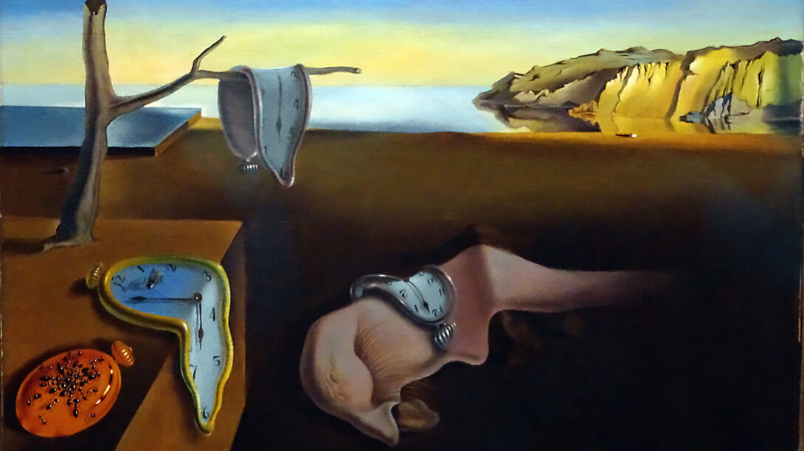

The Death of "Art"
Dadaism
Coming out of Zurich, Switzerland, what initially started out as a stand against war and society’s norms soon would fuel a movement many calling “anti-art.” Artists involved in this movement use mockery, humor, and different forms of art that people at that time would not have considered. What we were once used to things that made sense and are “beautiful,” quickly changed into seeing the assortment of ordinary objects being called art. Challenging this status quo that they were so used to, experimentation in art was at its all time high. This was only the start as it paved the way for Surrealism and some conceptual art.
 Dada Wiki
Dada Wiki
Surrealism
Formally started in 1924 by French poet André Breton in his “Manifesto of Surrealism,” he talks of freeing one’s mind of things like censorship and embracing dreams. While continuing to challenge the norm, Surrealism came with aims for liberation. Both movements are unconventional in a sense, one can look at Surrealism art and see that it is more imaginary and dream-like. It did not stop at just art, its influence, along with Dadaism, can be found in art and film. With these movements coming out in times plagued by war, the ideology of looking towards the future and moving on from the past is just one of the many reasonings for these art forms.
 Surrealism Wiki